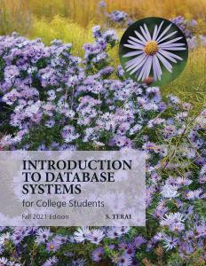
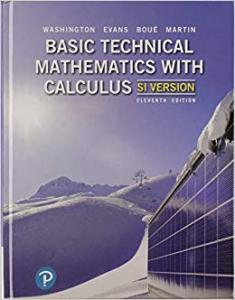
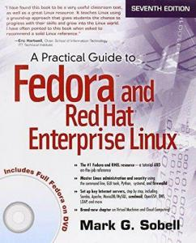
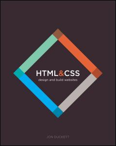

| Level: 01 |

|
CST8101 - Computer Essentials
The essentials of computer software, hardware, and laptop
management form the foundation for building further technical
programming skills. Learn to configure your laptop environment,
basic PC and troubleshoot problems. Create backups, install virus
protection, and manage files through a basic understanding of the
Windows Operating System. Install and configure the Windows
Operating System, and a virtual machine environment. Explore
computer organization including basic numerical systems,
functional hardware and software components needed to run
programs.
|

|
CST8116 - Introduction to Computer Programming
"Possessing the fundamentals of logic, problem-solving and
programming language structure provides a solid foundation for
further study in the field. Students develop introductory
knowledge of computer programming with emphasis on problem
analysis and design, using algorithms, pseudocode, flowcharts, UML
Class Diagrams and testing, with the Java programming language
used as a means to implement problem solution designs. Through an
introduction to the Java programming language students use
sequential structures, selection structures, repetition
structures, variables, constants, methods, constructors,
one-dimensional arrays, object-oriented programming, classes,
objects, abstraction, encapsulation, inputs, outputs, coding
conventions and documentation. Theory is reinforced with
application by means of practical laboratory assessments.
|
|  |
CST8215 - Introduction to Database
Students learn the fundamentals of Relational Databases design
using Entity Relation diagrams, and use SQL to create, modify and
query a database. Students design and create databases that are
maintainable, secure and adaptable to change in business
requirements, using Normalization. Students are able to compare
and appreciate a Database Management System (DBMS) and its
components with legacy systems.
|
|
CST8300 - Achieving Success in Changing Environments
Rapid changes in technology have created personal and employment
choices that challenge each of us to find our place as
contributing citizens in the emerging society. Life in the 21st
century presents significant opportunities, but it also creates
potential hazards and ethical problems that demand responsible
solutions. Students explore the possibilities ahead, assess their
own aptitudes and strengths, and apply critical thinking and
decision-making tools to help resolve some of the important issues
in our complex society with its competing interests.
|
|
|
ENL1813T - Communications I
Communication remains an essential skill sought by employers,
regardless of discipline or field of study. Using a practical,
vocation-oriented approach, students focus on meeting the
requirements of effective communication. Through a combination of
lectures, exercises, and independent learning, students practise
writing, speaking, reading, listening, locating and documenting
information and using technology to communicate professionally.
Students develop and strengthen communication skills that
contribute to success in both educational and workplace
environments.
|
|
|  |
MAT8001C - Technical Mathematics for Computer Science
The study of algebraic and transcendental functions is an
essential prerequisite to Calculus. Students manipulate algebraic
expressions, solve algebraic equations and linear systems and
learn the properties of and graph algebraic and transcendental
functions. Students investigate computer number systems in
addition to Boolean algebra and logic to help solve problems
involving computer systems. Students also study the addition and
subtraction of vectors using vector components. Delivered in a
modular format, this course is equivalent to the completion of all
of the following math modules MAT8100 - A, B, C, D, E, F, and L.
|
| Level: 02 |
|
|
CST2355 - Database Systems
Students acquire practical experience using market-leading
object-relational database management systems like Oracle and
MySQL. Students obtain hands-on experience with advanced
engineering modeling tools along with SQL, SQL scripts and
programming with Oracle's PL/SQL blocks. Database concepts covered
include advanced SQL, case structures, rollup and cube operations,
metadata manipulation, data storage and retrieval, security and
transaction control and data warehousing. Open source database
software is also explored.
|
|  |
CST8102 - Operating System Fundamentals (Gnu/Linux)
Learn the basic concepts and components of Operating Systems (OS),
and how they function and interact with hardware and software
components. Explore the details of operating system structures,
process management, storage management, installation,
configuration, and administration both in theory and through
practical assignments based on the GNU/Linux operating system. Lab
exercises are designed to demonstrate how to implement the theory
by developing skills using the powerful GNU/Linux command-line
tools and utilities.
|

|
CST8284 - Object Oriented Programming (Java)
Learn object oriented programming methodology using the Java
programming language. Object oriented concepts, such as
encapsulation, inheritance, abstraction and polymorphism are
covered and reinforced with practical applications.
|
|  |
CST8285 - Web Programming
Learn the basics of web programming, website design and
implementation. JavaScript, HTML5, and PHP are used to explore
web-based solutions to problems of increasing interactivity and
complexity. Lectures are reinforced by practical assignments that
encourage students to construct and maintain their own
websites.
|
|
ENL2019T - Technical Communication for Engineering Technologies
The ability to communicate effectively in a technically-oriented
interdisciplinary workplace is a foundational skill in an
innovation-driven economy. Students are exposed to exercises and
assignments designed to foster independent and collaborative
critical thinking, research, writing, visual communication and
presentation skills related to technical topics.
|
|
|
GEP1001 - Cooperative Education Readiness
Students are guided through a series of activities which prepares
them for their co-op job search term. Through a detailed
orientation students learn the cooperative education program
policies and procedures related to searching and securing a work
term opportunity. Students identify their strengths and
transferable skills and participate in workshop style sessions
that focus on cover letter and resume development, interview
techniques and job search strategies. Students learn how to
navigate HireAC where employers post cooperative education job
opportunities. Students reflect on workplace success, ethics and
responsibilities.
|